CS 180 · Project 3
Fun with Flow Models
The goal of this project was to explore how flow models move from noise to an image. In Part A, I used a pretrained model for denoising, image generation, editing, and optical illusions. In Part B, I implemented a UNet and trained it on MNIST, first for single-step denoising and then for flow matching.
Part A
Exploring the Power of Flow Models
I used the pretrained PixNerd-XXL-P16-T2I model, which predicts a velocity for a noisy image at a given time and text condition. The images are center-cropped and resized to 512 x 512, with RGB values normalized to [-1, 1]. Time runs from pure noise at 0 to a clean image at 1.
Seed 180 · Euler step size 0.02 · Guidance weight 7 where CFG is used
Part A · 1.1
Constructing Noisy Training Inputs
I first mixed a photo of my girlfriend’s cat, Didi, with Gaussian noise at three different times. I used the same noise for each image so that only the amount of image information changed. At t = 0 the input is pure noise, and at t = 1 it is the clean image.
x_t = (1 - t) * epsilon + t * x_1Interpolation Implementation
def interpolate(image, noise, t):
return (1 - t) * noise + t * image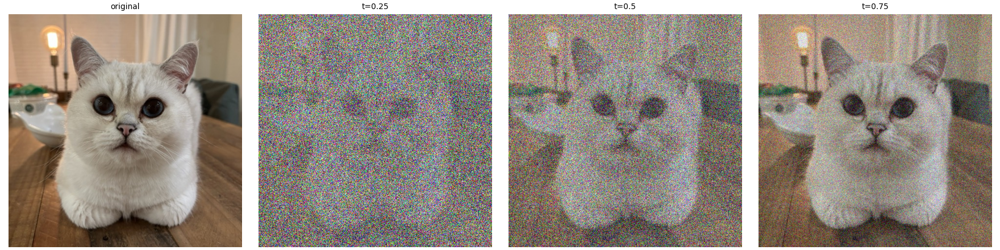
At t = 0.25, most of the image is hidden by noise. Didi’s face becomes easier to recognize at 0.50, and much of the original image is visible at 0.75. Increasing t both adds more of the image and reduces the contribution from the noise.
Part A · 1.2
Classical Denoising
The first approach I took to removing the noise was a Gaussian blur. I divided each noisy input by t to restore the image’s brightness, then tried sigma values of 1, 2, 4, 8, and 16. I chose the blur with the lowest mean squared error (MSE) compared with the original image.
x_hat_blur = gaussian_blur(x_t / t)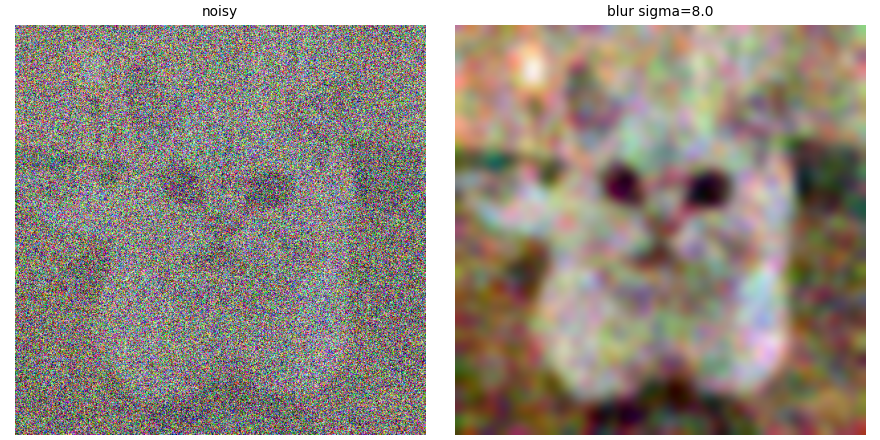
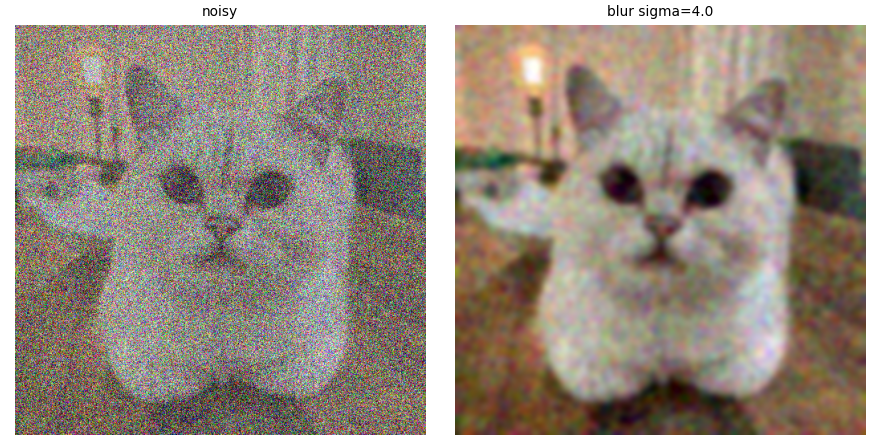
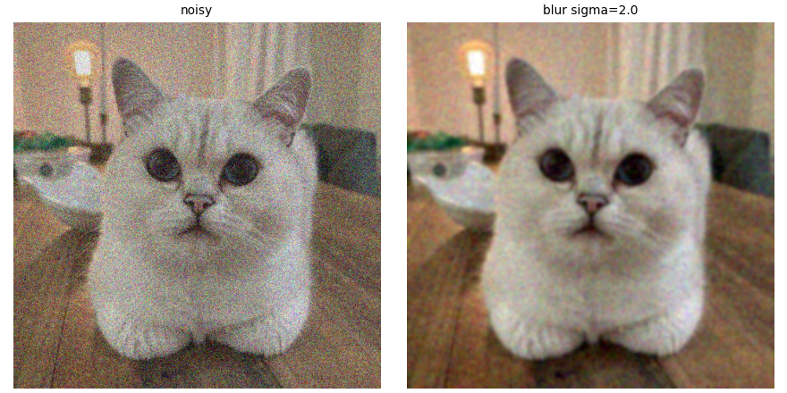
The noisier image needed a stronger blur, which also removed more of the details in Didi’s fur. At t = 0.75, a smaller blur was enough to reduce the noise while preserving more of the face. Selecting sigma this way uses the known original image for comparison.
Part A · 1.3
One-Step Denoising
I next used the pretrained model to predict the velocity from the noisy image toward a clean image. Multiplying this prediction by the remaining time gives an estimate of the update needed to reach t = 1. Each result below uses one prediction with the prompt “a high quality photo.”
x_hat_1 = x_t + (1 - t) * v_theta(x_t, t, c)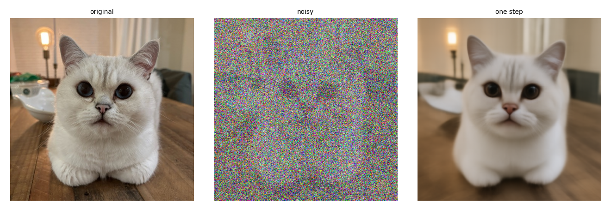
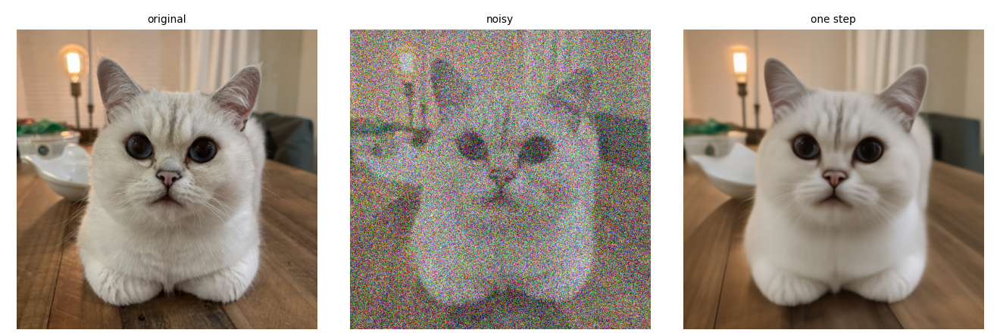
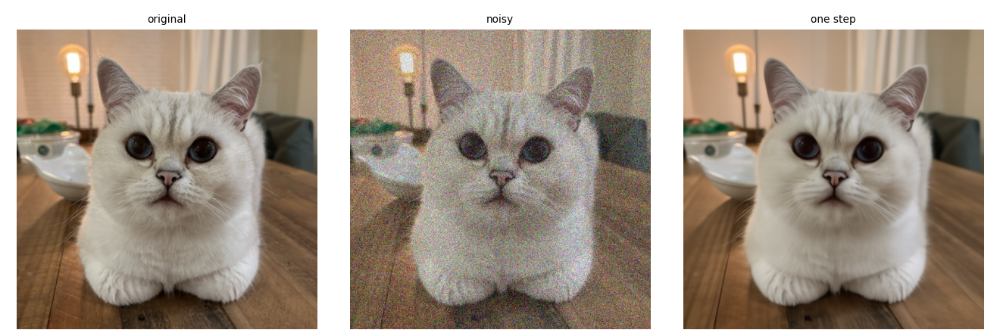
The model removes more of the noise than the Gaussian blur and preserves a recognizable face. However, at lower times the result looks softer and some of Didi’s details change. With less information left in the input, the model has to rely more on what it learned during training.
Part A · 1.4
Visualizing Velocity
Since I know the original image and the noise that was added, I can compute the update that would exactly recover the original. I compared this with the model’s predicted update at each time. The error map shows the root mean squared difference across the three color channels at each pixel.
predicted_update = (1 - t) * v_theta(x_t, t, c)
ground_truth_update = (1 - t) * (x_1 - epsilon) = x_1 - x_t
pixel_error = sqrt(mean_rgb((predicted_update - ground_truth_update)**2))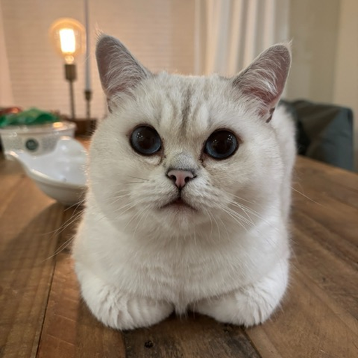
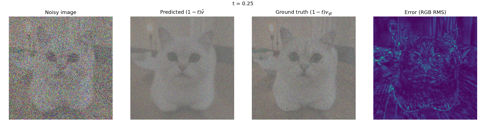
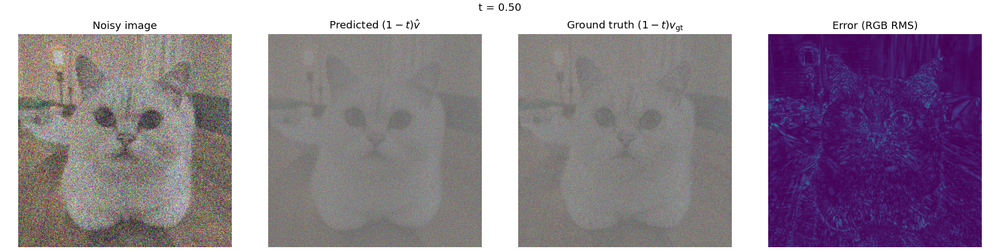
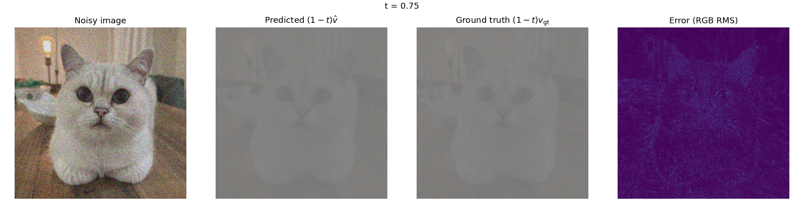
The updates use the same symmetric scale, with zero shown as gray. The heatmaps also share one linear scale so they can be compared across times. The predicted update does not exactly match the ground truth because the model only sees the noisy input and prompt, rather than the particular original image and noise that produced it.
Part A · 1.5
Iterative Denoising with Euler Sampling
Instead of estimating the whole update at once, I used Euler integration to make smaller updates and predict a new velocity after each one. I started from the saved t = 0.50 input and took 25 steps of size 0.02 to reach t = 1.
x_next = x + h * v_theta(x, t, c)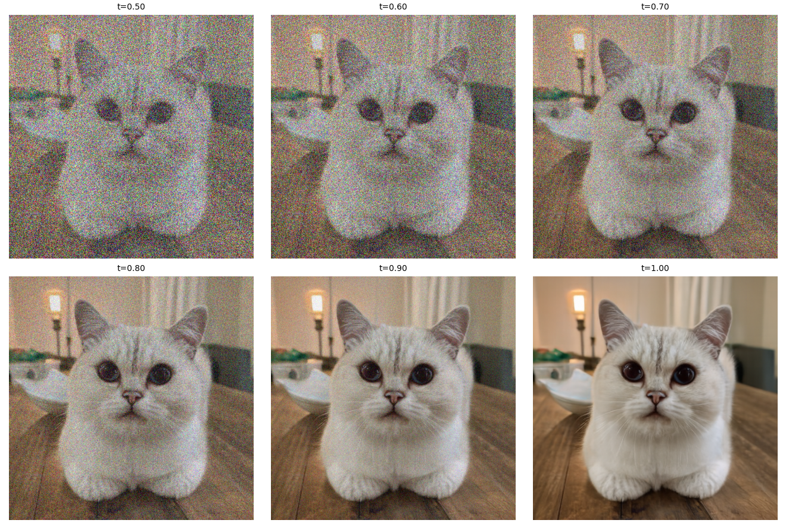
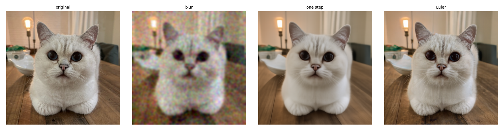
| Method | Reconstruction MSE |
|---|---|
| Gaussian blur | 0.009882 |
| One-step estimate | 0.003694 |
| Euler sampling | 0.004560 |
The Euler result has more visible texture than the one-step estimate, but it also changes some details of the original image. In this experiment, the one-step estimate had the lowest MSE. Euler sampling improved on the Gaussian blur, but the sharper-looking result did not mean a more accurate reconstruction.
Part A · 1.6
Generating Images from Noise
I then started from pure Gaussian noise at t = 0 and used 50 Euler steps to generate new images. All five samples use the prompt “a high quality photo,” with seeds 180 through 184. These use ordinary conditional predictions without classifier-free guidance.


The samples mostly show people, even though the prompt does not specify a subject. Several faces have distorted or unclear features. The broad prompt leaves the model with little direction about what to generate.
Part A · 2.1
Classifier-Free Guidance
I used the same prompt, “a high quality photo,” for the ordinary and guided samples. To strengthen the effect of the prompt, I predicted a velocity with the text condition and another with an empty prompt. I combined them using a guidance weight of 7, then used the same Euler sampler and initial noise as before. In this convention, a weight of 0 gives the ordinary conditional prediction.
v_cfg = v_c + w * (v_c - v_u), w = 7Seed 180

Seed 181

Seed 182

Seed 183

Seed 184

The guided results have clearer faces and more consistent portrait compositions. They still mostly show people, so strengthening the prompt did not change that pattern. The five pairs show the effect of guidance while keeping the starting noise fixed.
Part A · 3.1
Image-to-Image Editing
For image-to-image editing, I mixed an input with noise at a chosen starting time and sampled from there to t = 1. I used starting times of 0.02, 0.04, 0.06, 0.10, 0.14, 0.25, and 0.50, with seed 180, guidance weight 7, and step size 0.02.
Prompt: a high quality photo
Each panel shows the original first, followed by all seven starting times in reading order. Lower starting times leave less of the original image, so the model can make larger changes.
Campanile

The tower becomes more recognizable as the starting time increases. At the lowest times, there is little structure left to keep the output close to the Campanile.
Didi
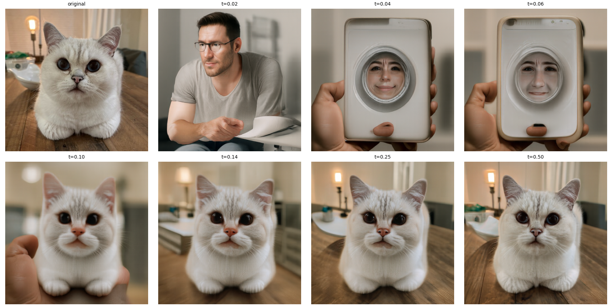
Didi is recognizable at the higher starting times. At lower times, the model changes much more of the image and can generate a different subject.
Golden Gate Bridge
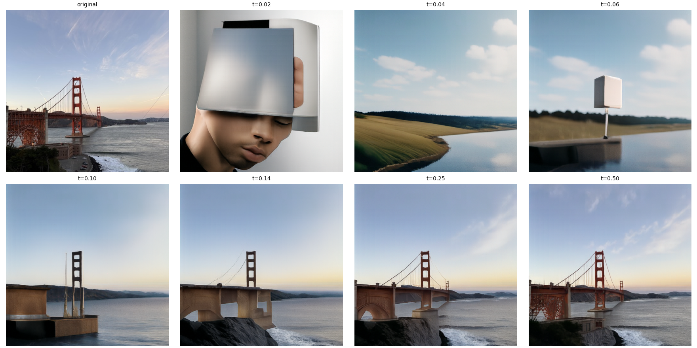
The bridge’s structure is better preserved at higher starting times. With more noise, the result depends more on the model than on the original photograph.
Web Image: Pikachu
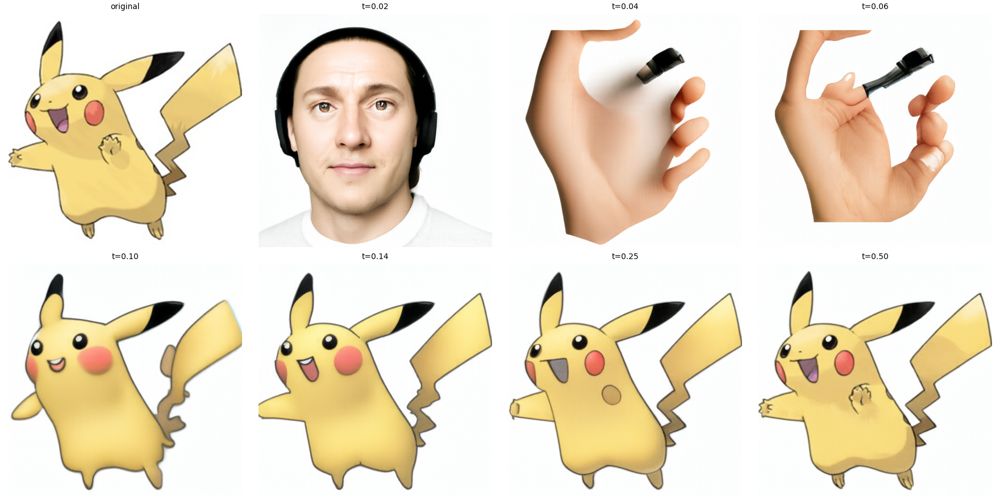
The Pikachu illustration is strongly reinterpreted at low starting times, including results that resemble faces or hands. At larger times, more of the original shape and colors remain.
Drawing: House and Tree
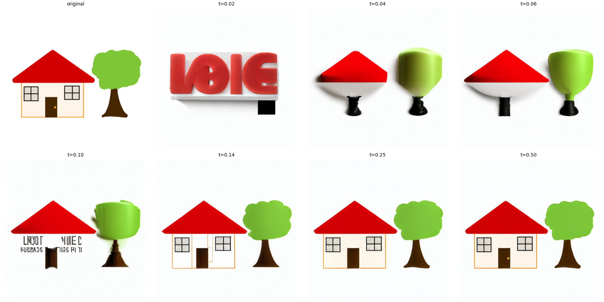
The house and tree become easier to identify as more of the drawing is preserved. The lower-time results do not consistently keep the intended scene.
Drawing: Oski
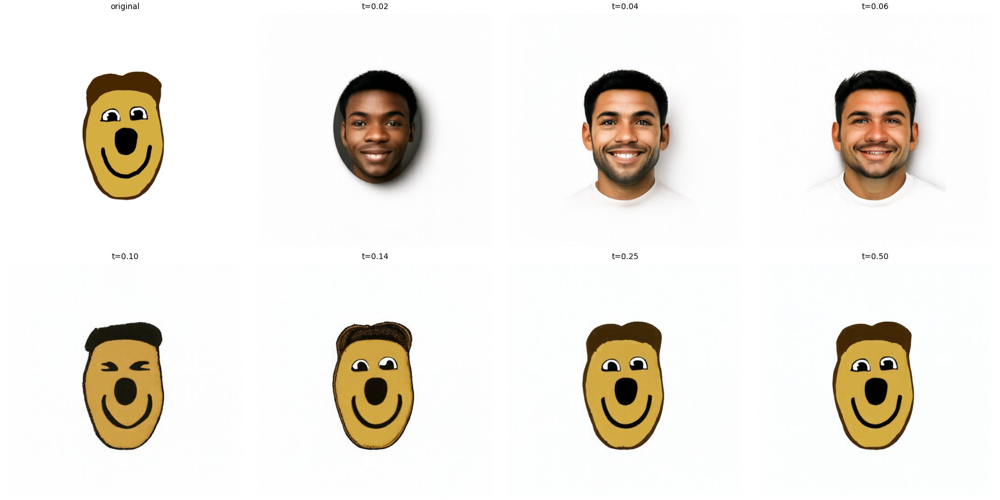
At low starting times, my drawing of Oski can turn into a photographic human face. At higher times, more of the original Oski drawing is preserved.
Part A · 3.2
Text-Guided Image Editing
I repeated the editing procedure with a more specific prompt for each image. The starting times and sampling settings stayed the same. This lets the prompt guide the changes while the starting time controls how much of the source remains.
Campanile → Lighthouse
Prompt: a photo of a lighthouse on the beach
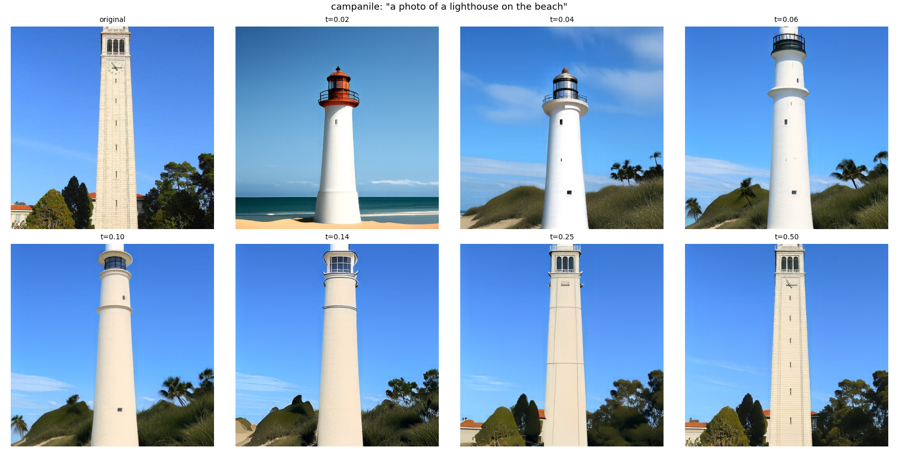
The result takes on lighthouse features while keeping a tower-like shape. Larger starting times preserve more of the Campanile.
Didi → Tiger
Prompt: a photo of a tiger
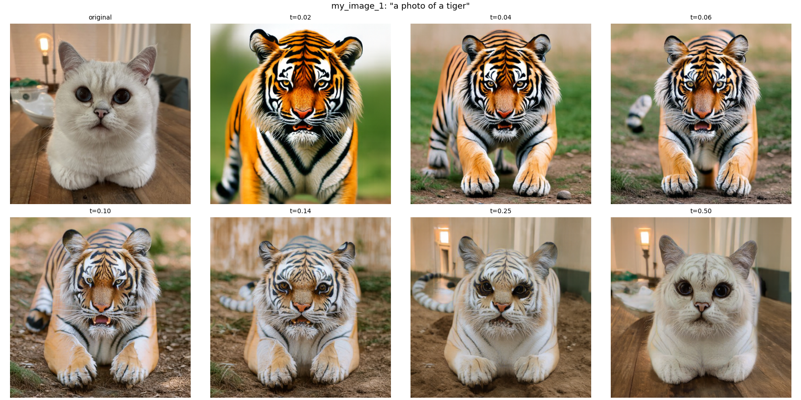
At lower starting times, the model changes Didi into a tiger. At higher times, more of the original cat remains, so the prompt has less room to change the image.
Golden Gate Bridge → Rope Bridge
Prompt: a cartoon of an old rope bridge
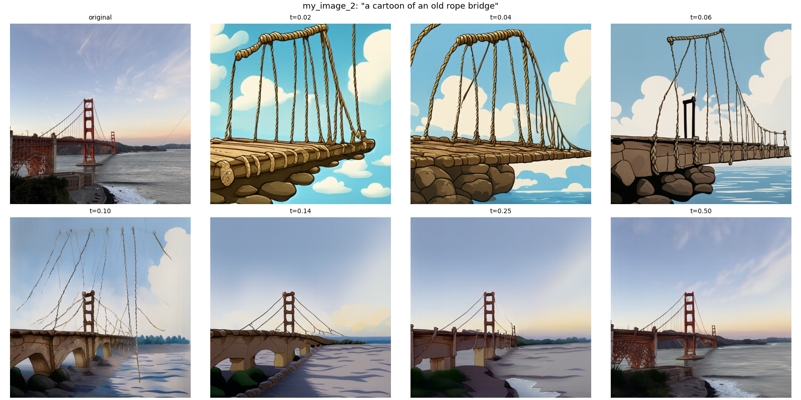
The lower-time results look more like a stylized rope bridge. Increasing the starting time brings back more of the original Golden Gate photograph.
Part A · 3.3
Visual Anagrams
To create an image with two interpretations, I predicted one velocity for the upright image and another for the image rotated by 180 degrees. I rotated the second prediction back, averaged the two velocities, and used the result for each Euler update.
v_a = CFG(x, t, prompt_a)
v_b = rotate180(CFG(rotate180(x), t, prompt_b))
v = (v_a + v_b) / 2Llama and Shark
Upright: a watercolor of llama
Rotated: a watercolor of a shark
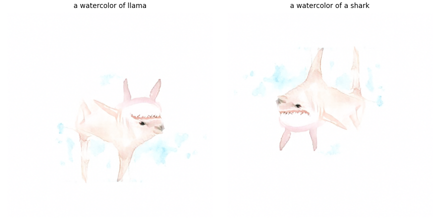
The long ears in the upright view become fins when the image is rotated. The same outlines work for both subjects while keeping the watercolor style.
Playground and Old Man
Upright: an oil painting of a children's playground
Rotated: an oil painting of a old man smoking a pipe
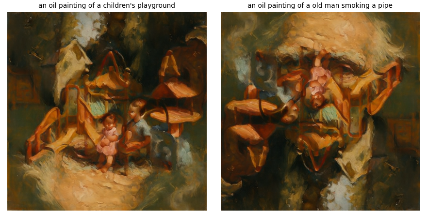
The playground is visible upright, and rotating the image brings out the old man’s face and pipe.
Part A · 3.4
Hybrid Images
For these hybrids, I combined the low frequencies of one guided velocity prediction with the high frequencies of another at every sampling step. I used a Gaussian filter with sigma 16 and a 265 x 265 kernel. The low-frequency prompt is intended to be seen from farther away, while the high-frequency prompt supplies the closer details.
v = lowpass(v_a) + (v_b - lowpass(v_b))Eye and Galaxy
Distant / low frequencies: a lithograph of a human eye
Close / high frequencies: a lithograph of a galaxy full of stars
Seed: 180

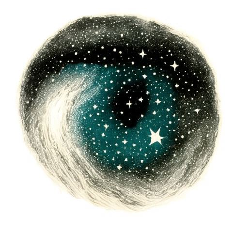
The broad circular shape and dark center suggest an eye in the small view. Up close, the stars and swirling details are more visible.
Zebra and City
Distant / low frequencies: an oil painting of a zebra
Close / high frequencies: an oil painting of a dense city of skyscrapers
Seed: 181

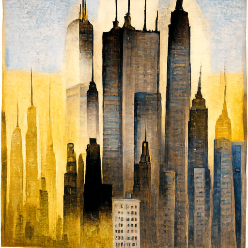
The skyscrapers are clear, but the zebra interpretation is much weaker. Reducing the image makes the larger shapes easier to see, although it still does not clearly read as a zebra.
Part B
Flow Matching from Scratch
For this part, I trained my own models on MNIST. The inputs are 28 x 28 grayscale images with clean pixel values in [0, 1]. I used the 60,000-image training set for training and held-out test images for the denoising comparisons. All models used Adam and MSE loss.
| Experiment | Width | Batch | Epochs | Adam learning rate | Sampling |
|---|---|---|---|---|---|
| Single-step denoiser | 128 | 256 | 5 | 0.0001 | One prediction; sigma = 0.5 |
| Pure-noise regression | 128 | 256 | 5 | 0.0001 | One prediction |
| Time-conditioned flow | 64 | 64 | 10 | 0.01, exponential decay | 50 Euler steps |
| Class-conditioned flow | 64 | 64 | 10 | 0.01, exponential decay | 300 steps; guidance 5 |
| Class-conditioned comparison | 64 | 64 | 10 | 0.001, constant | 300 steps; guidance 5 |
Colab Tesla T4 · float32 · Sampling seed 180
Part B · 1.1
Implementing the UNet
I first implemented a UNet to denoise MNIST images. The encoder reduces the image from 28 x 28 to 14 x 14 and then 7 x 7 before pooling to 1 x 1. The decoder upsamples back to the original size. At each stage, I concatenate the corresponding encoder features with the decoder features so that the model can use details from earlier layers.
28 x 28 → 14 x 14 → 7 x 77 x 7 → 1 x 1 → 7 x 77 x 7 → 14 x 14 → 28 x 28Each convolution block uses convolution, batch normalization, and GELU. Downsampling uses a stride of 2, and upsampling uses transposed convolutions. The final convolution produces one grayscale channel without a sigmoid. I used a hidden width of 128 for the single-step experiments.
Part B · 1.2
Using the UNet to Train a Denoiser
I added Gaussian noise to clean MNIST test images using the equation below. For each digit, I kept the noise sample fixed and changed sigma so the effect of stronger noise could be compared directly.
z = x + sigma * epsilon, epsilon ~ N(0, I)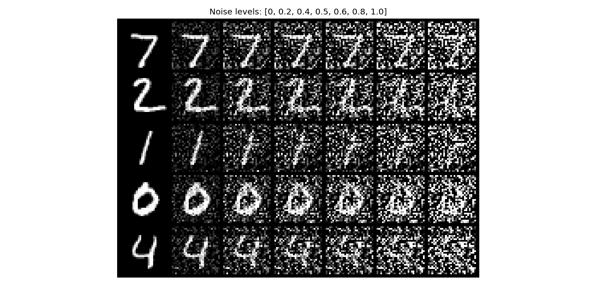
The digits are easy to read at lower noise levels, but the strokes become harder to distinguish from the background as sigma increases. At sigma 0 the input is unchanged.
Part B · 1.2.1
Training the Denoiser
I trained the UNet for five epochs to reconstruct clean images from inputs with sigma 0.5 noise. I used Adam with a learning rate of 0.0001, a batch size of 256, and MSE loss. Noise was generated when each batch was loaded, so the model saw different corruptions during training.
loss = MSE(D_theta(x + 0.5 * epsilon), x)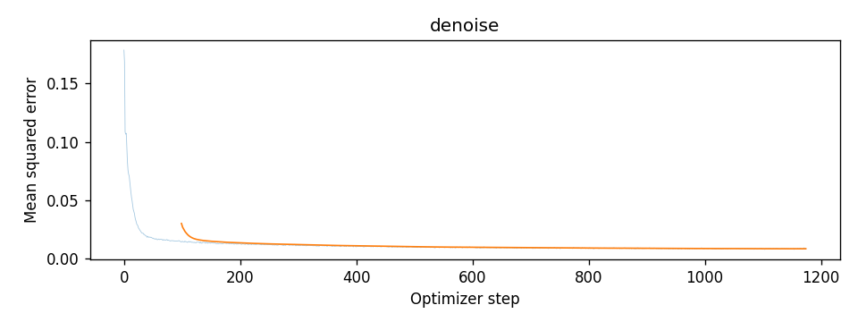

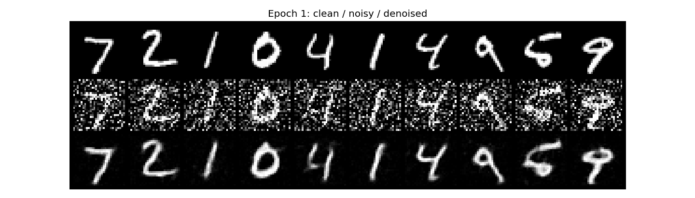

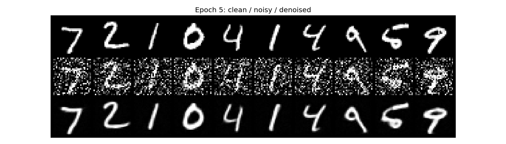
The model removes most of the background noise after one epoch. By epoch 5, the digits look cleaner and closer to the original strokes, although some small details are still smoothed out. Both comparisons use the same ten noisy test images, which were not used for training.
Part B · 1.2.2
Out-of-Distribution Testing
The denoiser was trained only with sigma 0.5 noise. I tested the five-epoch model on the same digit and noise sample at different noise levels to see how well it handled a different corruption strength.
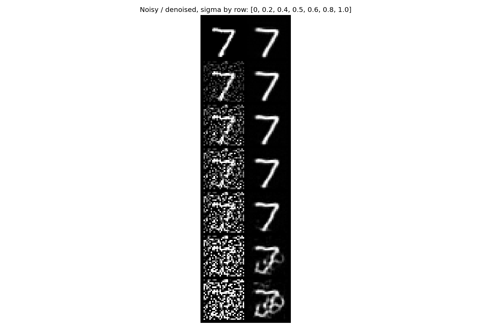
The 7 remains recognizable at the lower and moderate noise levels, including 0.6. At 0.8 and 1.0, the predicted strokes become more distorted and lose the shape of the original digit. This example shows that the model is sensitive to noise levels above the one it was trained on.
Part B · 1.2.3
Denoising Pure Noise
I trained a separate UNet using pure Gaussian noise as the input and a clean MNIST image as the target. The architecture, optimizer, batch size, and five-epoch training length stayed the same as the denoising experiment. Unlike the earlier inputs, the noise here contains no information about which target digit it is paired with.
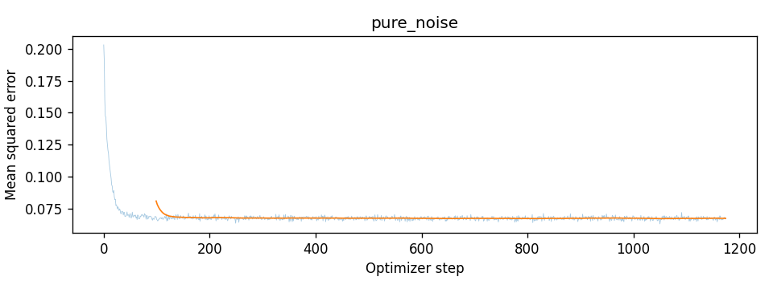

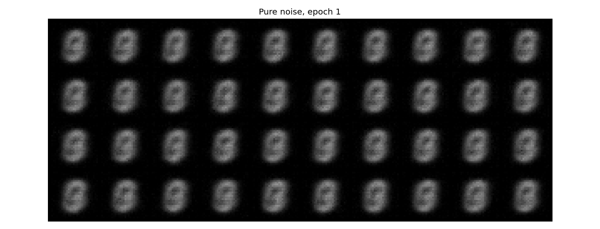

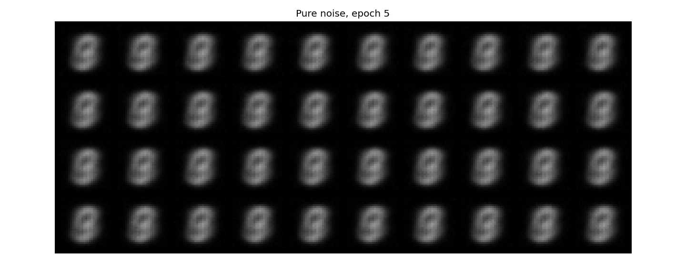
The outputs look like similar blurry combinations of digit strokes rather than different handwritten digits. With MSE loss, the best prediction is the average of the possible targets. Since the input noise is independent of the digit, the network has no way to choose one particular digit and instead learns something close to the average MNIST image.
Part B · 2.1
Adding Time Conditioning to the UNet
For flow matching, I changed the network to predict a velocity rather than a clean image directly. I mixed a clean training image with independent Gaussian noise at a random time between 0 and 1. The target velocity is the difference between the clean image and the noise.
x_t = (1 - t) * x_0 + t * x_1
v_target = x_1 - x_0
loss = MSE(v_theta(x_t, t), x_1 - x_0)I used a hidden width of 64 and added two fully connected blocks to embed the time. Each block has two linear layers with GELU between them. The embeddings multiply the features after unflattening at 7 x 7 and after the first upsampling stage at 14 x 14.
Part B · 2.2
Training the Time-Conditioned UNet
I trained on the MNIST training set for ten epochs with a batch size of 64. Adam started at a learning rate of 0.01, and an exponential scheduler multiplied it by 0.1 ** (1/10) after each epoch. I sampled fresh noise and a continuous random time for each training example.
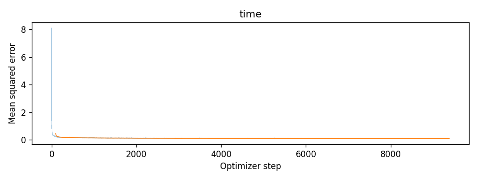
The loss drops quickly at first and then improves more gradually. This loss measures velocity prediction, so its values are not directly comparable to the image-reconstruction losses from the single-step experiments.
Part B · 2.3
Sampling from the Time-Conditioned UNet
To generate images, I started with Gaussian noise and integrated the predicted velocity from t = 0 to t = 1 using 50 Euler steps. I reset the sampling seed to 180 at each saved epoch, so the comparisons use the same starting noise.
x_next = x + v_theta(x, t) / T, T = 50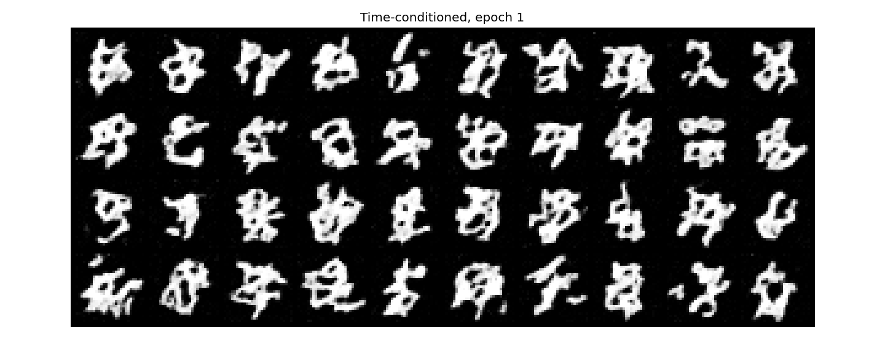
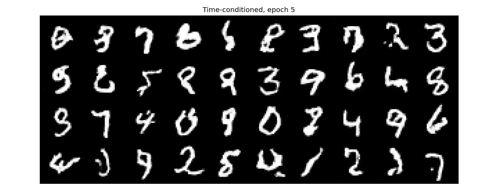
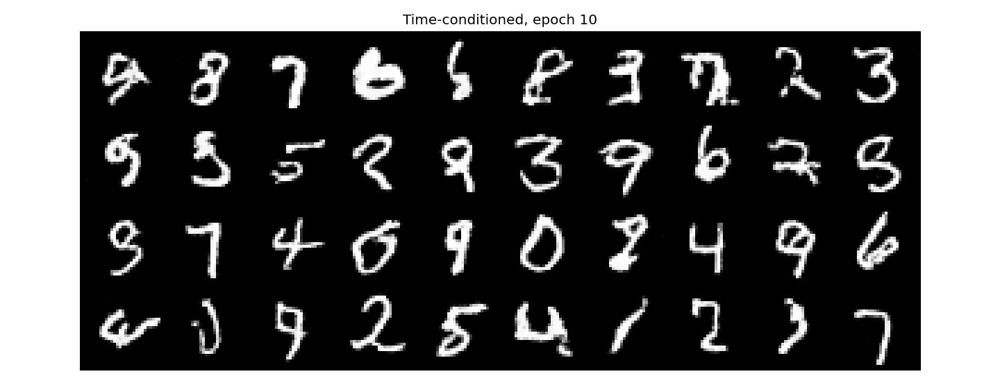
At epoch 1, many outputs are fragmented or difficult to read. By epoch 5, recognizable digits appear much more often, and the epoch-10 samples are generally cleaner. Some ambiguous shapes remain. These grids are not organized by digit class because the model is only given time.
Part B · 2.4
Adding Class Conditioning to the UNet
I added the digit label as a ten-dimensional one-hot vector and used two more fully connected blocks to embed it. This lets the model predict a velocity for a specific digit instead of choosing the class on its own.
Bottleneck features = c_1 * features + t_1
First upsampled features = c_2 * features + t_2In this model, the class embeddings multiply the features and the time embeddings are added. During training, I dropped the class input for 10% of examples by setting its one-hot vector to zero. Time conditioning stayed active. This trains the same network to predict velocities both with and without a digit label.
Part B · 2.5
Training the Class-Conditioned UNet
I trained a new class-conditioned model for ten epochs using the same width of 64, batch size of 64, and exponentially decayed learning rate starting at 0.01. The target was still the velocity x_1 - x_0, with MSE loss.
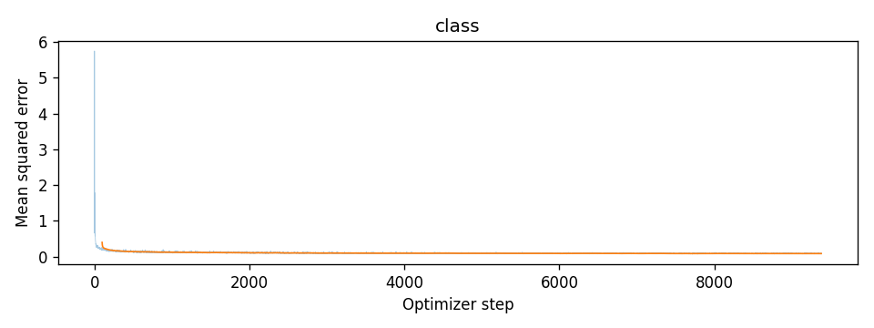
The loss falls sharply early in training and then decreases more slowly. The label gives the model information about which digit the noisy input should move toward.
Part B · 2.6
Sampling with Classifier-Free Guidance
At each sampling step, I predicted the velocity with the requested class and with the class input dropped. I used a guidance scale of 5 and 300 Euler steps. Part B uses the unconditional prediction as the base in the guidance equation; under this convention, a scale of 1 gives ordinary conditional sampling.
v_guided = v_uncond + 5 * (v_cond - v_uncond)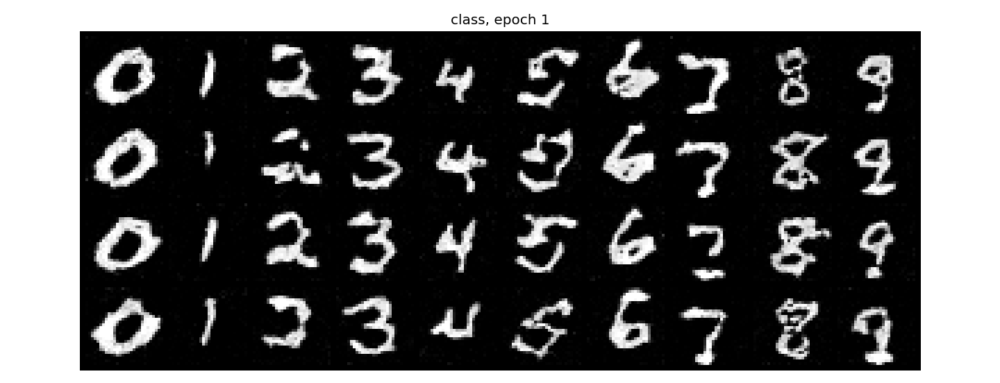
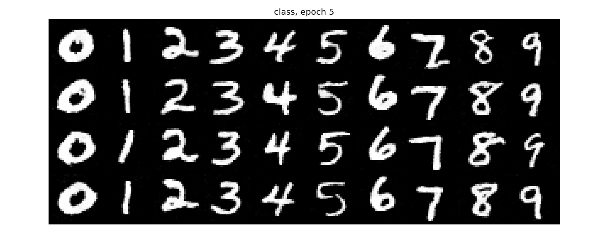
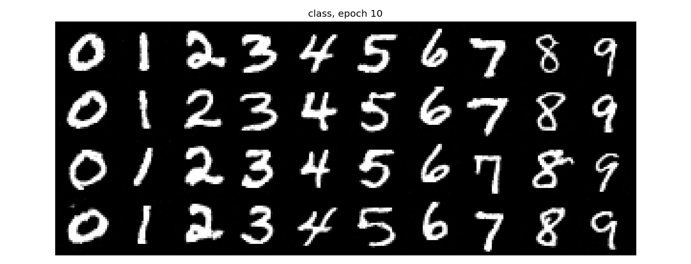
The class-organized structure is already visible after one epoch, although some digits have incomplete or extra strokes. By epochs 5 and 10, most samples are clean and recognizable, with variation in stroke shape and thickness. These results also use more integration steps and guidance than the time-only model, so the comparison does not isolate class conditioning alone.
Part B · Scheduler Comparison
Removing the Learning-Rate Scheduler
I trained another class-conditioned model from scratch without the exponential scheduler. To compensate, I lowered Adam’s learning rate from an initial 0.01 to a constant 0.001. The architecture, ten training epochs, batch size, class dropout, and sampling settings stayed the same.


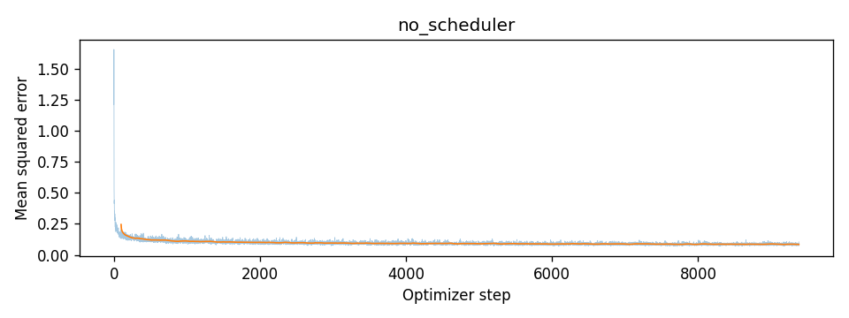
Both plots show velocity MSE over optimizer steps. Their vertical scales differ, so the heights of the curves should not be compared directly.
Epoch 1


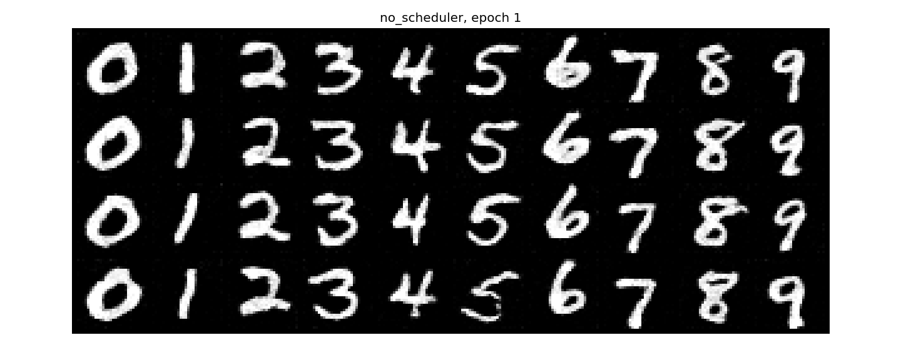
Epoch 5


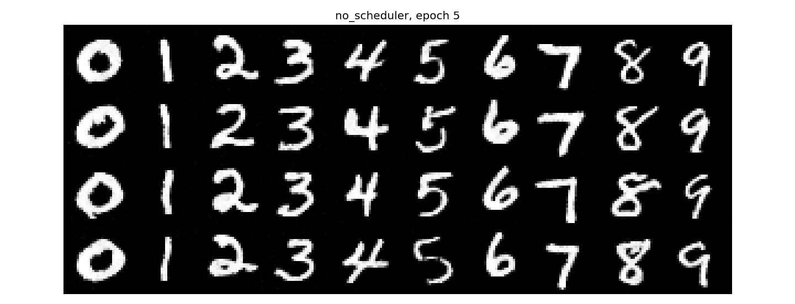
Epoch 10


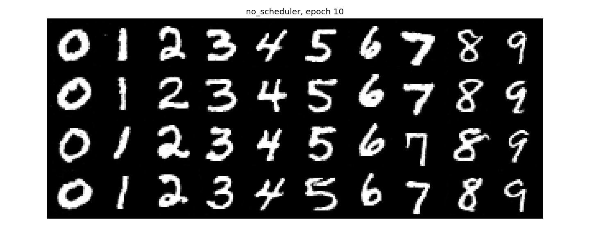
The constant-rate model already produces recognizable, class-ordered digits after one epoch. By epoch 10, both runs have similar visual quality in these fixed-seed samples, although the individual strokes differ. A smaller constant learning rate was enough for this experiment, but it still needed to be chosen sensibly.